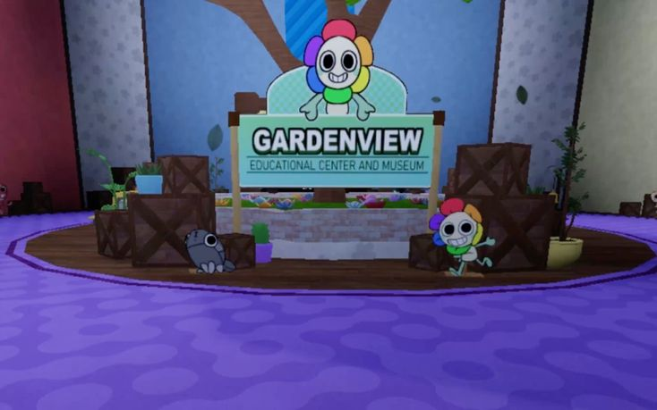
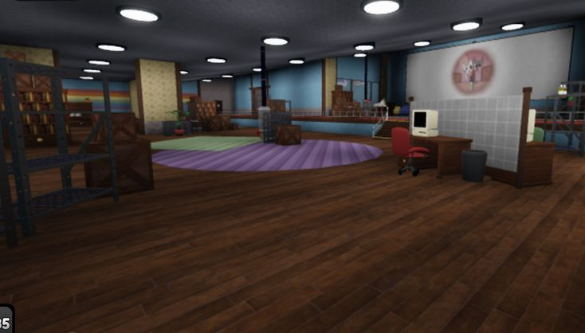
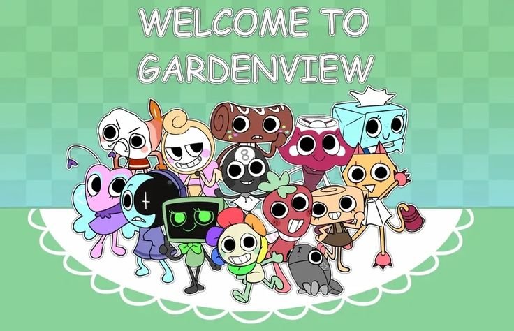
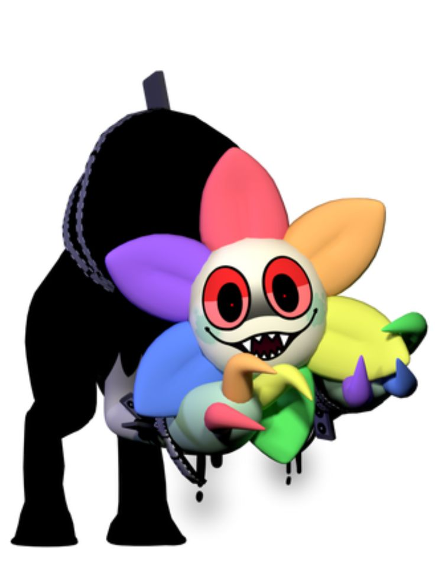

Dandy's World
Что такое Dandy's World?
Мир Денди (Dandy's World) — это кооперативный многопользовательский плейс в Roblox, выполненный в жанре survival horror с элементами кликера. Игрокам предстоит погрузиться в мрачную атмосферу, исследуя этажи загадочного музея Гарденвью. Вас ждут знакомые персонажи, жуткие локации и множество испытаний. Основная цель — собирать особый ресурс, называемый Ихор, улучшать способности героев и открывать новые этажи, продвигаясь всё глубже в этот таинственный и опасный мир. Игра сочетает в себе элементы выживания, командного взаимодействия и исследования, что делает её интересной для любителей хорроров и кооперативных приключений

Как проходить этажи?
Найти и активировать несколько машин. Для этого ваш персонаж крутит вентиль, а в процессе нужно пройти мини-игру на реакцию. По этажу бродят Твистеды (враги), от которых нужно прятаться или убегать. Собрать ресурсы. На локации разбросаны предметы, дающие Ихор и полезные бонусы . Спуститься на лифте. Когда все машины запущены, нужно добраться до лифта до окончания таймера и перейти на следующий этаж.

Туны (Toons)
Это главные герои, за которых играют пользователи. Они представляют собой антропоморфных персонажей с уникальными способностями, навыками и ролями в команде.
Туны делятся на несколько типов:
Обычные: Доступны для покупки или получения в процессе игры.
Летальные: Уникальные персонажи с экстремальными характеристиками (например, Денди, Дайл).
Ивентовые: Доступны только во время сезонных мероприятий (Рождество, Хэллоуин, Пасха).
Каждый Туны обладает набором активных и пассивных способностей. Например:
Астро: Восстанавливает выносливость команде.
Шелли: Ускоряет добычу ресурсов.
Ви: Показывает местоположение врагов на карте.
Пеббл: Ищет предметы, но своим лаем может привлечь врагов.

Твистеды (Twisteds)
Это главные антагонисты игры. По лору, Твистеды — это злые, обезображенные версии Тунов, искаженные Ихором. Они являются главными врагами игроков.
Цель: Их единственная задача — находить и убивать игроков.
Поведение: Твистеды патрулируют этажи музея. Если они замечают игрока, то начинают преследование. Чтобы спастись, нужно выйти из их зоны видимости (спрятаться или убежать).
Разнообразие: В игре существует множество видов Твистедов, каждый со своими особенностями и уровнем опасности.
Взаимодействие с Твистедами — это основная механика хоррор-составляющей игры: вам нужно выполнять задачи, оставаясь незамеченными этими существами.
